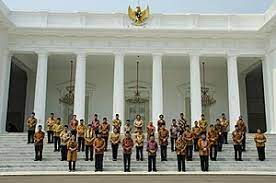
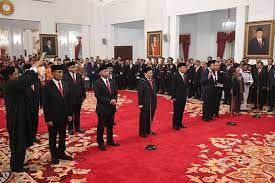
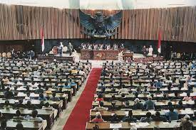
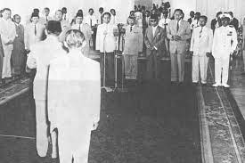
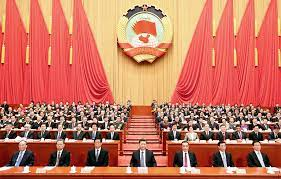
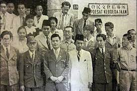

BAB II : Lembaga-lembaga Pada Masa Demokrasi Terpimpin
1) Kabinet Kerja 2) DPAS (Dewan Pertimbangan Agung Sementara) 3) MPRS (Majelis Permusyawaratan Rakyat Sementara) 4) DPR-GR (Dewan Perwakilan Rakyat Gotong Royong) 5) MPPR (Musyawarah Pembantu Pimpinan Revolusi) 6) Front Nasional

Pertama, pemimpin dari kabinet ini melibatkan Soekarno sebagai Ketua Menteri
dan Djuanda sebagai menteri utama. Djuanda didampingi oleh dua wakil, yaitu
dr. Leimena dan dr. Soebandrio. Kabinet ini menetapkan tiga inisiatif utama, yakni:
❊ Perbaikan kesejahteraan rakyat
❊ Peningkatan keamanan dalam negeri
qPembebasan Irian Barat

Kedua ada DPAS yang didirikan oleh Soekarno pada tanggal 22 Juli 1959 melalui Keputusan
Presiden Nomor 3 Tahun 1959. Tugas pokok DPAS adalah memberikan pertimbangan kepada
presiden dan mengusulkan saran kepada pemerintah.
Kepemimpinan DPAS melibatkan Soekarno sebagai ketua dan Roeslan Abdoelgani sebagai
wakil ketua. DPAS terdiri dari 45 anggota, yang terbagi menjadi 12 wakil golongan politik,
8 perwakilan daerah, 24 wakil golongan, dan satu ketua.

Ketiga ada DMPRS yang dibentuk oleh Soekarno pada 31 Desember 1959, bertugas
merumuskan GBHN dengan keanggotaan terdiri dari anggota DPR GR, perwakilan
daerah, dan anggota golongan fungsional, total 616 orang. Struktur pimpinan MPRS,
terdiri dari :
❊ Ketua : Chaerul Saleh
❊ Wakil ketua : Ali Sastroamidjojo, Idham Khalid, D.N. Aidit, Wiluyo Puspoyudo

Keempat, pada 5 Maret 1960, Soekarno menghentikan keberlangsungan DPR hasil Pemilu 1955.
Penghentian ini dipicu oleh penolakan DPR terhadap usulan Rancangan Anggaran Pembelanjaan Negara
(RAPBN) dari pemerintah.
Pasca pembubaran, Soekarno mendirikan DPR GR pada Juni 1960. Anggota DPR GR dipilih secara langsung
oleh Soekarno dengan memperhatikan perimbangan ideologi partai, termasuk Islam, Nasionalis, Komunis,
Kristen-Katolik, dan golongan fungsional.
Jumlah keseluruhan anggota DPR GR adalah 283 orang, terdiri dari 130 wakil partai dan 153 wakil
golongan fungsional.

Kelima ada MPPR yang merupakan sebuah entitas negara baru yang didirikan oleh Soekarno pada tahun 1962, memiliki
peran utama dalam memberikan dukungan kepada Soekarno dalam merumuskan kebijakan khusus terkait
penyelesaian revolusi.
Pembentukan MPPR dilakukan berdasarkan Penetapan Presiden nomor 4 tahun 1962. Anggota MPPR berasal
dari MPRS, DPR GR, dan pemimpin partai politik.

Keenam ada Front Nasional yang merupakan sebuah lembaga kenegaraan yang terbentuk melalui keputusan presiden
nomor 13 Tahun 1959. Salat satu tugasnya merupakan :
❊ Menyelesaikan revolusi nasional Indonesia.
❊ Melakukan pembangunan semesta nasional.
❊ Mengembalikan Irian Barat ke NKRI.